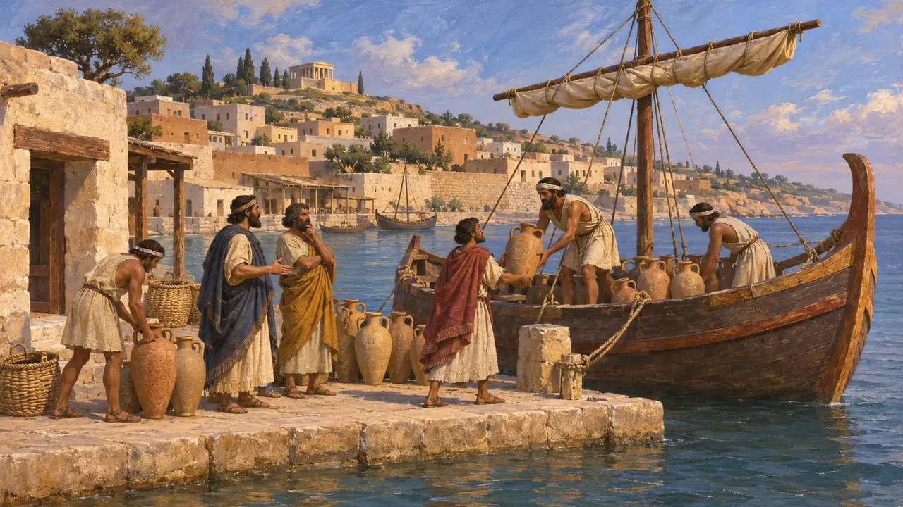
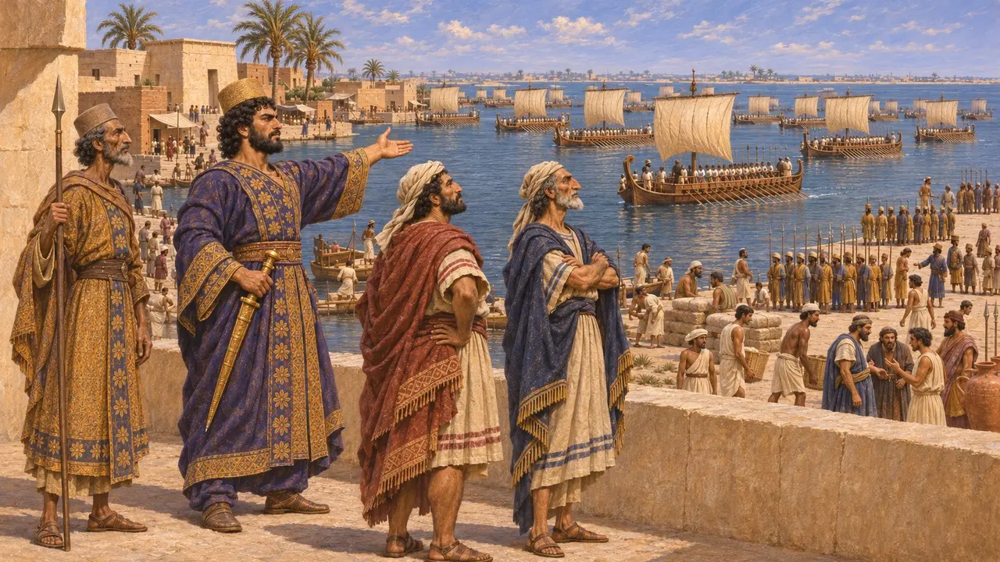
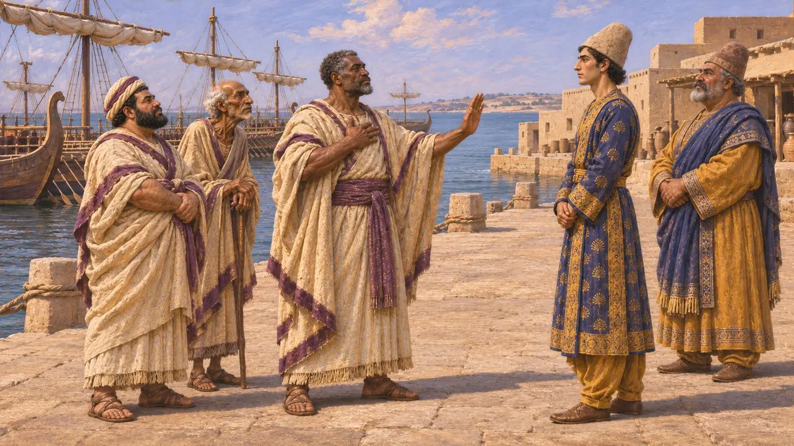
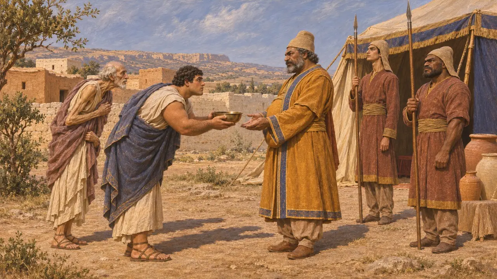
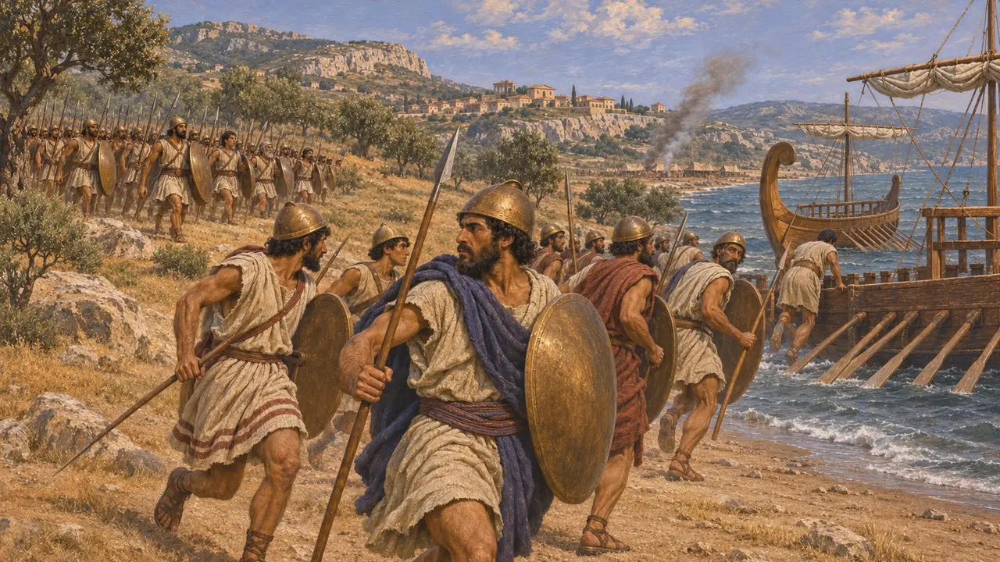

카르타고는 북아프리카 해안에 있던 페니키아인의 도시였다. 페르시아 기록에는 이 도시가 언급되지 않는다. 헤로도토스에 따르면 캄비세스는 이집트를 정복한 뒤 함대를 보내 카르타고를 공격하려 했으나, 페니키아인들이 자신들의 식민 도시를 치러 출항하기를 거부하여 계획은 포기되었다.
게임에서: 이 게임은 카르타고를 연대기 항목과, 중단된 원정 같은 사건 항목에서 언급합니다. 카르타고에는 고유한 레벨이나 건물, 메커니즘이 없습니다.

페니키아의 도시
고대의 전승헤로도토스는 카르타고인을 페니키아인의 후손이라 말하는데, 거절에 관한 그의 이야기는 바로 이 점에 달려 있다. 후대 저술가들은 도시의 건설을 티레에서 온 이주민의 일로 보며, 이는 아마 옳겠지만 후대의 전승에 근거한 것이다. 페르시아 왕의 비문 어디에도 이 도시의 이름은 나오지 않으므로, 페르시아가 이 도시를 어떻게 보았는지는 알 수 없다.
Herodotus 3.19

캄비세스의 계획
고대의 전승헤로도토스에 따르면 이집트가 무너진 뒤 캄비세스는 세 갈래의 원정을 계획했다. 하나는 바닷길로 카르타고를 치는 것이고, 다른 하나는 암몬인을, 나머지 하나는 에티오피아인을 치는 것이었다. 그는 첫 번째 원정에는 페니키아 함대를 쓰고, 나머지 원정에는 육군 일부를 보낼 생각이었다.
Herodotus 3.17

페니키아인의 거부
고대의 전승헤로도토스에 따르면 페니키아인은 맹세에 묶여 있었고 자기 자식들을 공격하고 싶지 않았기 때문에 카르타고를 향해 출항하려 하지 않았다. 캄비세스는 그들을 강요하지 않았다. 그들이 자발적으로 그의 편에 가담했고 함대가 그들에게 의존하고 있었기 때문이다. 헤로도토스는 이렇게 해서 카르타고인이 페르시아의 지배를 면했다고 덧붙인다.
Herodotus 3.19

이야기를 얼마나 믿을 수 있을까
분쟁 중페르시아 측 문서 가운데 이 계획을 확인해 주는 것은 없으며, 헤로도토스가 유일한 출처이다. 역사가들은 이것이 실패한 진지한 계획이었는지, 아니면 페르시아의 힘이 왜 카르타고에 이르지 못했는지를 설명하려고 나중에 만들어진 이야기인지를 두고 의견이 갈린다. 헤로도토스는 페르시아의 세력이 리비아까지 미쳤음을 분명히 기록하고 있다. 키레네는 캄비세스에게 복속했고, 바르카는 훗날 다리우스 치하에서 포위당했다.
Herodotus 3.13

카르타고와 그리스 침공
분쟁 중수 세기 뒤에 글을 쓴 디오도로스는 카르타고의 시칠리아 공격이 크세르크세스의 침공과 시기를 맞춘 것이라고 말한다. 헤로도토스는 카르타고가 시칠리아에서 패배했다고 전하지만, 크세르크세스와의 어떤 합의도 서술하지 않는다. 두 사건이 서로 조율된 것인지는 확실하지 않으며, 동방과 서방에서 거둔 승리를 짝지으려는 그리스인의 바람이 이야기를 만들어 냈을 수도 있다.
Diodorus Siculus 11.1
출처
- Herodotus 3.17-19
- Herodotus 7.165-167
- Diodorus Siculus 11.1
- P. Briant, From Cyrus to Alexander, 2002